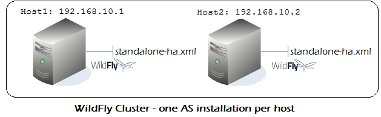
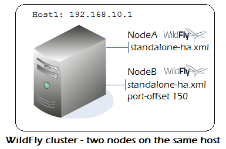
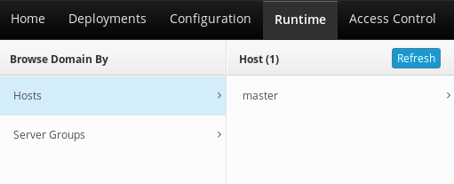

├── appclient
│ └── configuration
├── bin
│ ├── scripts (1)
├── docs (2)
├── domain (3)
│ ├── configuration
│ └── tmp
├── standalone (4)
│ ├── configuration
│ ├── data
│ ├── deployments
│ ├── lib
│ ├── log
│ └── tmp
├── modules (5)Title Slide
Cosa è WildFly?
WildFly è un Application Server open source sviluppato da Red Hat.
Ambiente di runtime per applicazioni Java EE e Jakarta EE.
Provider di servizi applicativi, di sicurezza e con funzionalità di clustering.
WildFly deriva del progetto JBoss Application Server.
Installazione di WildFly
Diverse opzioni
Download dei binari
Build dei sorgenti da GitHub
Avvio come immagine Docker
Tools di provisioning (Ansible, Galleon)
Download Binari
Binari disponibili su: https://www.wildfly.org/downloads/
WildFly File System
Scripts avvio e Command Line tools
Schemi configurazione
Configurazione Dominio
Configurazione Standalone
Moduli
WildFly start up
Gli script di avvio di WildFly sono nella cartella
bindell' Application ServerPer avviare in modalità Standalone:
$ ./standalone.shImpostare JBOSS_HOME
JBOSS_HOME è una variabile d’ambiente che indica la directory di installazione di WildFly.
Se impostata farà override del PATH corrente dove siete posizionati
Assicurarsi che JBOSS_HOME punti alla directory principale di WildFly.
È possibile impostare questa variabile a livello di sistema o per la sessione corrente.
export JBOSS_HOME=/home/jboss/wildfly-30.0.0.FinalCreare un utente amministratore
Creare un utente amministratore è fondamentale per la gestione di WildFly.
Gli utenti amministratori hanno privilegi per la gestione e il monitoraggio del server.
L’utente amministratore di solito viene creato utilizzando gli script di gestione di WildFly.
Assicurarsi di assegnare ruoli appropriati all’utente amministratore.
add-user.sh / add-user.bat
Lo script
add-userpresente nella cartellabinconsente di aggiungere utentiPuò aggiungere utenti Amministrativi o Applicativi:
$ ./add-user.sh
What type of user do you wish to add?
a) Management User (mgmt-users.properties)
b) Application User (application-users.properties)
(a):Creazione di un utente in modalità non interattiva
In alcuni casi, è possibile creare un utente in modalità non interattiva utilizzando script o comandi.
Questa modalità consente di automatizzare la creazione di utenti.
# Management User
$ ./add-user.sh -m -u administrator1 -p password1!
# Application User
$ ./add-user.sh -a -u applicationuser1 -p password1! -g guestStopping WildFly
L’arresto di WildFly può essere eseguito utilizzando script o comandi specifici.
È importante assicurarsi che tutte le applicazioni siano state arrestate in modo sicuro prima dell’arresto del server.
Il corretto arresto di WildFly contribuisce a evitare la perdita di dati e a mantenere l’integrità del sistema.
Verificare i log e i messaggi di stato durante la procedura di arresto.
Stopping WildFly
Il processo Java di WildFly verrà interrotto dai comuni comandi OS (es.
kill -9)Il modo raccomandato per eseguire lo shutdown è tramite la Command Line Interface
[standalone@localhost:9990 /] :shutdown
{
"outcome" => "success",
"result" => undefined
}Stopping WildFly da un host remoto
Utilizzando gli strumenti di Management (Web Console o CLI) è possibile fare uno shutdown remoto
[standalone@192.168.10.1:9990 /] :shutdown
{
"outcome" => "success",
"result" => undefined
}Problemi comuni all’avvio
Esiste già una applicazione che utilizza le porte di WildFly:
fuser -v -n tcp 8080
PORT USER PID ACCESS COMMAND
8080/tcp: tomcat 7148 F.... javaErrori nel file di configurazione:
OPVDX001: Validation error in standalone.xml -------------------------------
| 34: <management>
| 35: <security-realms>xx
| 36: <security-realm name="ManagementRealm">
| ^^^^ Received non-all-whitespace CHARACTERS or CDATA event in nextTag()Installare WildFly come servizio
Consente di avviare WildFly all’avvio del sistema operativo
Gestione Centralizzata con altri Servizi del sistema operativo
Sono già disponibili gli script batch per Linux/Windows
Installare WildFly come servizio su Linux
Utilizzo init.d daemon
Mediante scripts in
$JBOSS_HOME/docs/contrib/scripts/init.d
Utilizzo systemd daemon
Copia scripts in
$JBOSS_HOME/docs/contrib/scripts/systemdnelle cartelle di/etc
Installare WildFly come servizio su Windows
Scripts disponibili in
$JBOSS_HOME/docs/contrib/scripts/service
service installCollegarsi con la Command Line Interface
Posizionarsi nella cartella
$JBOSS_HOME/binEseguire lo script
jboss-cli.sh(Linux) oppurejboss-cli.bat
$ ./jboss-cli.sh
You are disconnected at the moment. Type ‘connect' to connect to the
server or ‘help' for the list of supported commands.
[disconnected /] connectConfigurazione Application Server
Le due modalità del server disponibili
Standalone: Utilizzato per singole istanze di server. Ogni istanza ha la propria configurazione e servizi.
Domain: Utilizzato per la gestione centralizzata di più istanze server. Condividono una configurazione comune e possono essere gestite insieme.
Il file di configurazione di WildFly
Il file di configurazione di default è denominato
standalone.xmlodomain.xml.Incluso nella directory di configurazione di WildFly.
Puoi utilizzare un file non default mediante il parametro
-c
$ ./standalone.sh -c standalone-ha.xmlExtensions
Forniscono le funzionalità dell’application server. Ad esempio le specifiche Jakarta EE per lo sviluppo di applicazioni
Implementano una Interfaccia (
org.jboss.as.controller.Extension) per poter essere integrati con l’application server
<extensions>
<extension module="org.jboss.as.clustering.infinispan"/>
<extension module="org.jboss.as.connector"/>
<extension module="org.jboss.as.deployment-scanner"/>
<extension module="org.jboss.as.ee"/>
<extension module="org.jboss.as.ejb3"/>
</extensions>Path
Nome logico per un percorso del file system.
<path name="log.dir" path="/home/wildfly/logs" />Utilizzabile come riferimento in altre sezioni della configurazione (es. logs). Esempio:
<file relative-to="log.dir" path="server.log"/>Path Relativi
Un Path può anche essere relativo a una definizione di percorso esistente, come in questo caso dove si fa riferimento alla directory dati del server:
<path name="logdata.dir" path="example"
relative-to="jboss.server.data.dir"/>Il parametro
relative-tosi combina con il path di riferimento
Interfaces
Mappano gli host/IP address dell’application server
Interfacce disponibili di default
<interfaces>
<interface name="management">
<inet-address value="${jboss.bind.address.management:127.0.0.1}"/>
</interface>
<interface name="public">
<inet-address value="${jboss.bind.address:127.0.0.1}"/>
</interface>
</interfaces>Interfaces
Per essere visibile all’esterno occorre sostituire l’interfaccia di loopback
<interface name="public">
<inet-address value="${jboss.bind.address:192.168.10.1}"/>
</interface>In alternativa, fornire all’avvio la System Property:
$ standalone.sh -Djboss.bind.address=192.168.10.1Socket bindings
Contiene le porte utilizzate da WildFly
E' possibile impostare un offset per tutte le porte
<socket-binding-group name="standard-sockets" default-interface="public"
port-offset="${jboss.socket.binding.port-offset:0}">
<socket-binding name="management-http"
interface="management" port="${jboss.management.http.port:9990}"/>
. . . .
</socket-binding-group>Property
Imposta Java System Property all’avvio di WildFly
<system-properties>
<property name="myproperty" value="false"/>
</system-properties>Equivalente a:
$ ./standalone.sh -Dmyproperty=valueProfili del server
Contiene un elenco di subsystem
Ogni subsystem corrisponde ad una
extension
<profile>
<subsystem
xmlns="urn:jboss:domain:logging:6.0">
. . . ..
</profile>Files di configurazioni in modalità Standalone
standalone.xml : Default. Non include messaging o clustering
standalone-full.xml : Aggiunge al default il server ActiveMQ e lo stack iiop-openjdk.
standalone-ha.xml : Aggiunge al default il supporto per HA.
standalone-full-ha.xml : Aggiunge al profilo ha il server ActiveMQ
standalone-microprofile.xml : Fornisce la API Eclipse MicroProfile
standalone-microprofile-ha.xml : Fornisce le API Eclipse MicroProfile e HA
standalone-load-balancer.xml : Fornisce il Server Undertow come Load Balancer
Configurare le impostazioni JVM in modalità standalone
Consigliato impostare in
standalone.conf(Linux) ostandalone.conf.bat(Windows)
JAVA_OPTS="-Xms64m -Xmx1024m -XX:MaxMetaspaceSize=256M"Configurare network interfaces in standalone mode da CLI
Collegarsi alla Command Line Interface:
Settare l’attributo del Model. Esempio:
/interface=management/:write-attribute(name=inet-address,value=${jboss.bind.address.management:192.168.10.1})Configurare i Socket Bindings
Due tipologie di Socket Bindings: Inbound and Outbound.
Inbound socket bindings controllano i Socket in ingresso
Outbound sockets controllano i Socket in uscita
Esempio Settaggio Socket Bindings
Settaggio di un InBound Socket binding (Servizio HTTP):
/socket-binding-group=standard-sockets/socket-binding=http/
:write-attribute(name=port,value=${jboss.http.port:8180})Settaggio di Socket OutBound (Servizio mail)
/socket-binding-group=standard-sockets/
remote-destination-outbound-socket-binding=mail-smtp/
:write-attribute(name=host,value=localhost)WildFly Domain mode: scopo
Gestione centralizzata di più istanze del server.
Divisione logica di cluster di servers
Condivisione delle risorse e delle configurazioni tra le istanze.
Miglior controllo nella amministrazione e gestione di più unità di servers
Componenti di un Dominio di Servers
Domain Controller: Il punto di controllo di gestione del tuo dominio. Detiene una configurazione centralizzata condiviso dalle istanze dei servers di dominio.
Host Controller: Il processo responsabile della coordinazione dei nodi del server con il Domain Controller. Ogni Host Controller ha il proprio file di configurazione host.xml.
Server: Processi Java che corrispondono alle istanze di WildFly. Ogni nodo fa parte di un Server Group.
Architettura Dominio
Esempio Dominio:
Configurazione Domain Controller (1)
Definizione del Domain Controller
<domain-controller>
<local/>
</domain-controller>Aggiunta di un utente di Management:
./add-user.sh -ds -m -u wildflyadmin -p password1!Configurazione Domain Controller (2)
Utilizzo di una interfaccia di Management
<management-interfaces>
<native-interface sasl-authentication-factory="management-sasl-authentication">
<socket interface="management" port="9999"/>
</native-interface>
</management-interfaces>Configurazione Host Controller (1)
Definizione nome Host
<host xmlns="urn:jboss:domain:20.0" name="host1">Configurazione Host Controller (2)
Definizione di una Management Interface
<management-interfaces>
<http-interface http-authentication-factory="management-http-authentication">
<http-upgrade enabled="true" sasl-authentication-factory="management-sasl-authentication"/>
<socket interface="management" port="${jboss.management.http.port:19990}"/>
</http-interface>
</management-interfaces>Configurazione Host Controller (3)
Definizione dei Servers
<servers>
<server name="server-prod-one" group="main-server-group">
<socket-bindings port-offset="100"/>
</server>
<server name="server-dev-one" group="other-server-group">
<socket-bindings port-offset="200"/>
</server>
</servers>Configurazione Host Controller (4)
Configura autenticazione verso il Domain Controller
<authentication-client>
<authentication-configuration name="hostAuthConfig" authentication-name="wildflyadmin" realm="ManagementRealm" sasl-mechanism-selector="DIGEST-MD5">
<credential-reference clear-text="password1!"/>
</authentication-configuration>
<authentication-context name="hcAuthContext">
<match-rule authentication-configuration="hostAuthConfig"/>
</authentication-context>
</authentication-client>Configurazione Host Controller (5)
Configura puntamento verso il Domain Controller
<domain-controller>
<remote protocol="remote" host="${jboss.domain.master.address:localhost}" port="9999" authentication-context="hcAuthContext">
<discovery-options>
<static-discovery name="discovery-one" protocol="${jboss.domain.master.protocol:remote}" host="${jboss.domain.master.address:localhost}" port="${jboss.domain.master.port:19999}"/>
</discovery-options>
</remote>
</domain-controller>Avvio Dominio
In presenza di default values per Domain Controller e Host Controller:
$ ./domain.shParametri utili per configurazioni custom
$ domain.sh --host-config=host-slave.xml \
-Djboss.domain.base.dir=/path/domainSet Up Domain
Lab
Practice Domain Management
Lab
Capitolo 3: Gestione del server con la console Web
La console Web consente di amministrare WildFly da browser
Semplifica l’accesso alle risorse del Server
Risorsa utile per raggiungere servers remoti senza JBoss Client libs
Richiede sempre un’utenza di Management
Connessione alla console HAL
Indirizzo di default:
Tour della Console Web
Lab
Capitolo 4: Gestione del server con la CLI
Vantaggi Command Line Interface
Consente scripting comandi
Può funzionare in modalità embedded
Può eseguire gli script in batch
Interfaccia poliglotta
Consente espansione dei comandi
Avviare la riga di comando
$ ./jboss-cli.shOppure:
./jboss-cli.sh --connect 192.168.10.1 --user=admin1234 --password=password1234!Esecuzione script CLI:
$ ./jboss-cli.sh --file=myscript.cliRecupero della configurazione del server utilizzando la CLI
La configurazione del Server è composta da un insieme di risorse
Le risorse sono organizzate in gerarchie
Esempio:
/subsystem=undertow/server=default-server/http-listener=defaultEsecuzione dei comandi con la CLI
Una volta raggiunta una risorsa è possibile espandare le operazioni disponibili con
:
/subsystem=undertow/server=default-server/http-listener=default:
add query read-resource
list-add read-attribute read-resource-description
list-clear read-attribute-group removeLettura degli attributi delle risorse
Per leggere gli attributi di una risorsa si utilizza l’operation
read-resource:
/subsystem=undertow/server=default-server/http-listener=default:read-resource()
{
"outcome" => "success",
"result" => {
"buffer-pool" => "default",
"enabled" => true,
"max-post-size" => 10485760L,
"socket-binding" => "http",
"worker" => "default"
}
}Scrittura degli attributi delle risorse
Per modificare gli attributi di una risorsa si utilizza l’operation
write-attribute:
/socket-binding-group=standard-sockets/socket-binding=http:write-attribute(name=port,value=8280)
{
"outcome" => "success",
"response-headers" => {
"operation-requires-reload" => true,
"process-state" => "reload-required"
}
}Aggiunta di nuove risorse
Per aggiungere una risorsa si utilizza l’operation
add:
/subsystem=naming/binding=java\:global\/myname:add(binding-type=simple, type=int, value=100)Navigazione nella cronologia dei comandi CLI
I comandi della CLI sono memorizzati nella history nel file
$HOME/.jboss-cli-history
historyE' combinabile con il comando
grepcome il comando equivalente dell’OS:
history | grep 9999Abilitare la risoluzione delle proprietà nella CLI
E' possibile passare System Properties alla CLI:
./jboss-cli.sh -c -Dmyval=foo --resolve-parameter-valuesLe System Properties saranno utilizzabile nei comandi CLI:
/system-property=foo:add(value=${myval})Rilevamento delle operazioni attive
E' possibile eseguire Auditing sui comandi CLI in esecuzione
Utili per sicurezza e per tracciare eventuali comandi in stallo:
/core-service=management/service=management-operations:read-children-resources(child-type=active-operation)E' possibile cancellare le operazioni bloccate:
/core-service=management/service=management-operations:cancel-non-progressing-operationAudit dei comandi CLI
Consente di tenere un log delle operazioni inviate alla CLI. Di default non è abilitato
Per abilitare l’auditing delle operazioni che modificano la configurazione:
/core-service=management/access=audit/logger=audit-log:write-attribute(name=enabled,value=true)Per abilitare l’auditing anche delle operazioni read-only:
/core-service=management/access=audit/logger=audit-log:write-attribute(name=log-read-only,value=true)Esecuzione della CLI in modalità grafica
E' possibile eseguire la CLI in una applicazione Java Client:
$ ./jboss-cli.sh --guiVantaggio: può semplificare la visione della gerarchia delle risorse e l’inserimento di nuove risorse
Capitolo 5: Funzionalità avanzate della CLI
CLI Batch mode: Esegui una serie di comandi o annulla l’esecuzione
[standalone@localhost:9990/] batch
[standalone@localhost:9990/#] deploy MyApplication.jar
[standalone@localhost:9990/#] /system-property=myprop:add(value=myvalue)
[standalone@localhost:9990/#] run-batchCLI Batch Hack
Come eseguire dei comandi batch contenuti in un file CLI:
[standalone@localhost:9990/] run-batch --file=myscript.cli --verboseCreazione di snapshot della configurazione
Il comando
take-snapshotconsente di creare una copia della configurazioneIl file XML salvato contiene il Timestamp dell’operazione
:take-snapshotDefault snapshots
La configurazione contiene di default una serie di Snapshot della configurazione nella cartella standalone_xml_history
standalone.initial.xml: Configurazione originale di WildFly.
standalone.boot.xml: Snapshot della configurazione presa all’avvio'
standalone.last.xml: Snapshot dell’ultima configurazione valida
Esecuzione della CLI in modalità embedded
Consente di modificare la configurazione senza che sia attivo WildFly
Utile per modifiche "a freddo" della configurazione senza editare i files XML
[disconnected /] embed-server --std-out=echoUscire dalla modalità embedded
Dopo aver eseguito le modifiche alla configurazione si termina la sessione embedded con:
[standalone@embedded /] stop-embedded-serverEsecuzione della modalità batch integrata in modalità domain
Esistono comandi equivalenti in modalità dominio:
embed-host-controller --std-out=echo --domain-config=domain.xml --host-config=host.xmlPer uscire dalla modalità embedded:
stop-embedded-host-controllerSospendere e riprendere il server
E' possibile sospendere WildFly in modo da terminare le richieste in coda:
:suspendSulla Console:
10:54:43,595 INFO [org.jboss.as.server] (management-handler-thread - 1) WFLYSRV0236: Suspending server with no timeout.
10:54:43,604 INFO [org.jboss.as.ejb3] (management-handler-thread - 1) WFLYEJB0493: EJB subsystem suspension completeSospensione con timeout:
:suspend(timeout=30)Operazioni consentite dopo la sospensioe
E' possibile sospendere WildFly in modo da terminare le richieste in coda:
Deploy/undeploy applicazioni
Modifiche alla configurazione
Termine della sospensione
Per terminare la sospensione del server:
:resumeEsecuzione condizionale con la CLI
La CLI supporta l’esecuzione condizionali di comandi
Utile per verificare la presenza di risorse prima di eseguire comandi.
if (outcome != success) of /deployment=myproject.war:read-resource
deploy myproject.war
end-ifCapitolo 6: Deploy applicazioni
Una applicazione può essere resa disponibile in diversi modi:
File system copy (standalone mode only)
Mediante Management interfaces (Admin Console or CLI)
Tools (f.e. Maven WildFly plugin)
Deploy applicazioni su File System
Nella modalità standalone, è possibile installare le applicazioni nella cartella deployments del Server
cp example.war /opt/wildfly-27.0.0.Final/standalone/deploymentsDi default il deploy avviene in automatico per gli archivi compressi (war/jar/ear/sar)
Deploy applicazioni esplose
Di default non avviene in automatico
Va aggiunto un marker file con suffisso
.dodeploy
$ cp -r Example.ear $JBOSS_HOME/standalone/deployments
$ touch $JBOSS_HOME/standalone/deployments/Example.ear.dodeploy# Per renderlo automatico:
/subsystem=deployment-scanner/scanner=default:write-attribute(name=auto-deploy-exploded,value=true)Configurazione del Deployment Scanner
Vediamo nel dettaglio le proprietà del Deployment Scanner:
/subsystem=deployment-scanner/scanner=default:read-resource
{
"outcome" => "success",
"result" => {
"auto-deploy-exploded" => false,
"auto-deploy-xml" => true,
"auto-deploy-zipped" => true,
"deployment-timeout" => 600,
"path" => "deployments",
"relative-to" => "jboss.server.base.dir",
"runtime-failure-causes-rollback" => expression "${jboss.deployment.scan
ner.rollback.on.failure:false}",
"scan-enabled" => true,
"scan-interval" => 5000
}
}Distribuzione tramite interfaccia Web
Seleziona il tab Deployments
Aggiungi un deploy mediante il pulsante (+)
Una lista di opzioni sarà disponibile:
Deploy tramite interfaccia Web
Lab
Deploy in Domain Mode
In modalità Dominio le applicazioni vanno installate su un Server group
E' possibile fare un deploy su un singolo Server group o su tutti:
# Deploy su tutti i Server Groups
deploy application.war --all-server-groups
# Deploy su un singolo Server Group
deploy application.war --server-groups=main-server-groupUndeploy in Domain Mode
Per la rimozione da tutti i Server groups:
undeploy application.war --all-relevant-server-groupsPer la rimozione da un Server groups, se l’applicazione era disponibile solo su quel Server groups:
undeploy application.war --server-groups=main-server-groupSe era distribuita su più Server groups:
undeploy application.war --server-groups=main-server-group --keep-contentDeploy in Domain Mode tramite Web Console
Analogamente alla CLI, l’applicazione va distribuita su un Server Group
Deploy applicazioni utilizzando Maven (1)
E' possibile eseguire il deploy applicativo inserendo questo Maven plugin nel file di progetto pom.xml:
<plugin>
<groupId>org.wildfly.plugins</groupId>
<artifactId>wildfly-maven-plugin</artifactId>
<version>4.0.0.Final</version>
</plugin>Deploy applicazioni utilizzando Maven (2)
Goals disponibili in questo plugin:
# Deploy applicazione
mvn wildfly:deploy
# Undeploy applicazione
mvn wildfly:undeploy
# Redeploy applicazione
mvn wildfly:redeployCapitolo 7: Configurazione Connessioni al DB
Le connessioni verso il Database sono configurate tramite il componente DataSource
Esistono due subsystem utilizzabili:
Datasource standard: Il datasource standard basato sullo standard JCA (Java Connector Architecture)
Datasource Agroal: Versione "slim" del datasource. Non disponibile di default
Creazione di un datasource utilizzando la CLI
E' possibile aggiungere un Datasource in diversi modi:
Installando il modulo nell’application server e configurando le risorse Datasource/JDBC Driver
Facendo il deploy del driver JDBC e configurando le risorsa Datasource
Configurato per via applicativa
Esempio di creazione di Datasource come modulo
Da Command Line:
module add --name=org.postgres --resources=postgresql-42.2.8.jar --dependencies=javax.api,javax.transaction.api
/subsystem=datasources/jdbc-driver=postgres:add(driver-name="postgres",driver-module-name="org.postgres",driver-class-name=org.postgresql.Driver)
data-source add --jndi-name=java:/PostGreDS --name=PostgrePool --connection-url=jdbc:postgresql://localhost:5432/postgres --driver-name=postgres --user-name=postgres --password=postgresInside Datasource module
Ogni Datasource deve estendere javax.api e javax.transaction.api . Il modulo deve includere il JDBC Driver:
<?xml version="1.0" encoding="UTF-8"?>
<module xmlns="urn:jboss:module:1.0" name="org.postgres">
<resources>
<resource-root path="postgresql-42.2.8.jar"/>
</resources>
<dependencies>
<module name="javax.api"/>
<module name="javax.transaction.api"/>
</dependencies>
</module>Creazione di un datasource in modalità domain
In modalità Dominio i comandi sono simili ma va aggiunto il riferimento al profile :
[disconnected /] module add --name=org.postgres --resources=postgresql-42.2.8.jar --dependencies=javax.api,javax.transaction.api
[domain@192.168.0.1:9990 /] /profile=full-ha/subsystem=datasources/jdbc-driver=postgres:add(driver-name="postgres",driver-module-name="org.postgres",driver-class-name=org.postgresql.Driver)
[domain@192.168.0.1:9990 /] data-source add --jndi-name=java:/PostGreDS --name=PostgrePool --connection-url=jdbc:postgresql://localhost:5432/postgres --driver-name=postgres --user-name=postgres --password=postgres --profile=full-haCreazione di un datasource XA
La creazione del modulo e del JDBC Driver è identica.
L’oggetto xa-data-source va configurato disaccoppiando la risorsa dalle property:
xa-data-source add --name=PostGresXA --jndi-name=java:/PostGresXA --driver-name=postgres --xa-datasource-class=org.postgresql.xa.PGXADataSource --user-name=postgres --password=postgres --xa-datasource-properties=[{ServerName=localhost}]
/subsystem=datasources/xa-data-source=PostGresXA/xa-datasource-properties=DatabaseName:add(value="postgres")Configurazione di un datasource utilizzando la Console Web
Lab su come configurare il Datasource da Console
Distribuzione di un datasource come risorsa
Il JDBC Driver è riconosciuto come modulo in automatico. Può essere anche configurato come segue:
Da linea di Comando:
cp postgresql-42.2.8.jar /opt/wildfly-27.0.0.Final/standalone/deploymentsDa CLI WildFly:
data-source add --name=PostgrePoolDeploy --jndi-name=java:/PostgreDSDeploy --driver-name=postgresql-42.2.8.jar --connection-url=jdbc:postgresql://localhost/postgres --user-name=postgres --password=postgresConfigurazione Pool (1/2)
Attributi principali:
min-pool-size: Il numero minimo di connessioni nel pool (impostato di default a 0)
initial-pool-size: Il numero iniziale di connessioni da acquisire dal database
max-pool-size: Il numero massimo di connessioni nel pool (impostato di default a 20)
pool-use-strict-min: Indica se le connessioni inattive al di sotto di min-pool-size dovrebbero essere chiuse
Configurazione Pool (2/2)
Attributi principali:
pool-prefill: Tentativi di precaricare il pool di connessioni al numero minimo di connessioni. Questo controllerà le connessioni non appena il Datasource è installato.
flush-strategy: Specifica come dovrebbe essere svuotato il pool in caso di errore. L’impostazione predefinita (FailingConnectionOnly) comporta la distruzione solo delle connessioni con errori.
idle-timeout-minutes: Specifica il tempo massimo, in minuti, in cui una connessione può rimanere inattiva prima di essere chiusa.
track-statements: Indica se verificare la presenza di statement non chiusi quando una connessione viene restituita al pool. I valori validi sono: "false" (non tracciare gli statement), "true" (traccia gli statement e i risultati dei set e avvisa quando non vengono chiusi), "nowarn" (traccia gli statement ma non avvisa se non vengono chiusi).
Validazione delle connessioni al database
Essenziale per verificare se le connessioni sono ancora attive e funzionanti.
Può essere eseguita in due modi (in via esclusiva):
Validate on Match: Validazione puntuale su ogni statement
Background Validation: Validazione eseguita con un Thread in background
Validate on Match
Esegue una validazione puntale per ogni esecuzione
E' il sistema più affidabile per una validazione delle connessioni
/subsystem=datasources/data-source=PostgrePool:write-attribute(name=validate-on-match,value=true)Background Validation
Esegue una validazione in un Thread esterno
E' configurabile la frequenza della validazione
/subsystem=datasources/data-source=PostgrePool:write-attribute(name=background-validation, value=true)
/subsystem=datasources/data-source=PostgrePool:write-attribute(name=background-validation-millis, value=10000)Statistiche Datasource
Le statistiche del Pool di connessione sono disponibili coma attributo Runtime del Datasource
Come per altri subsystem, vanno abilitate
/subsystem=datasources/data-source=PostgrePool/statistics=pool:read-resource(include-runtime=true)
{
"outcome" => "success",
"result" => {
"ActiveCount" => 1,
"AvailableCount" => 19,
"AverageBlockingTime" => 0L,
"AverageCreationTime" => 331L,
"AverageGetTime" => 166L,
"AveragePoolTime" => 175000L,
"AverageUsageTime" => 18L,
. . . . .Configurazione del datasource Agroal
Può offrire prestazioni / memory footprint migliori
Non disponibile di default, va attivato:
/extension=org.wildfly.extension.datasources-agroal:add
/subsystem=datasources-agroal:addUtilizzo del Datasource Agroal
Comandi identici al datasource standard
La differenza è che si fa riferimento al
datasources-agroalsubsystem
/subsystem=datasources-agroal/driver=agroal_driver:add(class=org.postgresql.Driver,module=org.postgres)Capitolo 8: Configurazione del server Web Undertow
Il Web Server Undertow fornisce supporto per applicazioni Web
Utilizza il subsystem
ioper gestire le connessioni in ingressoArchitettura estendibile con Handlers e Filters
Configurazione dei filtri
Un filtro consente di modificare una richiesta HTTP
Può utilizzare i predicati per controllare quando un filtro viene eseguito.
Esempi:
Response Header Filter
Connection Limit Filter
Response Compression Filter
Error Filter
Response Header Filter
Filter che aggiunge un Response Header "WildFly-Dev":
/subsystem=undertow/configuration=filter/response-header=server-header:add(header-name=my-response-header, header-value="WildFly-Dev")
/subsystem=undertow/server=default-server/host=default-host/filter-ref=server-header/:add()Connection Limit Filter
E' possibile utilizzare un Filter per aggiungere dei limiti alle connessioni di Undertow. Esempio:
/subsystem=undertow/configuration=filter/connection-limit=mylimit/:add(max-concurrent-requests=25,queue-size=100)
/subsystem=undertow/server=default-server/host=default-host/filter-ref=mylimit/:add()Gzip Filter
Mediante un gzip filter è possibile comprimere la Response. Esempio:
/subsystem=undertow/configuration=filter/gzip=zipfilter/:add()
/subsystem=undertow/server=default-server/host=default-host/filter-ref=zipfilter/:add()Error Filter
In alternativa a definire pagine di errore nel file web.xml è possibile impostare un Filter per un codice di errore HTTP:
batch
/subsystem=undertow/server=default-server/host=default-host/filter-ref=404-handler:add(predicate=true)
/subsystem=undertow/configuration=filter/error-page=404-handler/:add(code=404,path=/var/docs/www/error.html)
run-batchCustom Filter
E' possibile definire un Filtro Custom implementando io.undertow.server.HttpHandler :
public interface HttpHandler {
void handleRequest(HttpServerExchange exchange) throws Exception;
}Il modulo con il Filtro va installato su Wildfly con:
/subsystem=undertow/configuration=filter/custom-filter=custom-filter/:add(class-name=io.undertow.server.handlers.HttpTraceHandler,module=io.undertow.core)Configurazione Handlers Undertow
Gli Undertow Handlers sono classi Java che implementano
io.undertow.server.HttpHandlerGestiscono la Request e selezionano il prossimo Handler
public class ExampleHandler implements HttpHandler {
@Override
public void handleRequest(final HttpServerExchange exchange) throws Exception {
// implementation
}
}Esempio: Reverse Proxy Handler 1
Un Reverse Proxy può essere utilizzato per fare da proxy per le richieste da un Host A verso un Host B
Esempio: Come indirizzare le richieste da
localhost:8080/in⇒localhost:8180/out
Esempio: Reverse Proxy Handler 2
Implementazione pratica:
batch
/subsystem=undertow/configuration=handler/reverse-proxy=myproxy:add()
/subsystem=undertow/configuration=handler/reverse-proxy=myproxy/host=localhost:add(instance-id="myRoute",outbound-socket-binding="http-remote",path="/out",scheme="http")
/subsystem=undertow/server=default-server/host=default-host/location="/in":add(handler="myproxy")
/socket-binding-group=standard-sockets/remote-destination-outbound-socket-binding=http-remote/:add(host=localhost,port=8180)
run-batchConfigurazione Undertow Listeners
I listeners sono i punti di ingresso ad un Server Undertow
Ogni listener è collegato ad un
socket-binding:
<http-listener name="default" socket-binding="http" redirect-socket="https" enable-http2="true"/>
<https-listener name="https" socket-binding="https" security-realm="ApplicationRealm" enable-http2="true"/>Configurazione del numero massimo di connessioni per i listener Undertow
Numero massimo di connessioni contemporanee per un Listener:
<http-listener name="default" max-connections="300"
socket-binding="http" redirect-socket="https" enable-http2="true"/>/subsystem=undertow/server=default-server/http-listener=default:write-attribute(name=max-connections,value=300)Connection Pool Undertow
Undertow utilizza un Pool di XNIO Workers:
/subsystem=io/worker=default:read-resource()
{
"outcome" => "success",
"result" => {
"io-threads" (1)
"stack-size" (2)
"task-core-threads" (3)
"task-max-threads" => (4)
}
}
}Threads I/O Condivisi tra Connessioni (non-blocking)
Web Server Thread Stack Size
Numero iniziale di Core Workers (blocking)
Numero max di Core Workers (blocking)
Custom Worker
Esempio: Custom worker largerworker con io-threads a 10 e task-max-threads a 100:
/subsystem=io/worker=largeworker/:add(io-threads=10,stack-size=0,task-keepalive=60,task-max-threads=100)
batch
/subsystem=undertow/server=default-server/http-listener=default/:write-attribute(name=worker,value=largeworker)
# Needed for remoting
/subsystem=remoting:write-attribute(name=worker,value=largeworker)
run-batchBuffer Pool Configuration
Un Buffer è un’area di memoria temporanea utilizzata per memorizzare dati prima di essere lavorata.
Come configurare ed applicare un Buffer Pool:
/subsystem=undertow/byte-buffer-pool=mybuffer/:add(buffer-size=32000,leak-detection-percent=0,max-pool-size=20,thread-local-cache-size=12)
/subsystem=undertow/server=default-server/http-listener=default:write-attribute(name=buffer-pool,value=mybuffer)Configurazione degli host virtuali in Undertow
Un Virtual Host consente di ospitare più domini in un singolo Server
Richiede tre passagi:
Configurazione a livello OS
Configurazione a livello Undertow
Configurazione applicativa (optional)
Virtual Host Configuration 1
Mappa sul tuo OS i domini aggiuntivi
Esempio:
127.0.0.1 my-wildflyVirtual Host Configuration 2
Configurazione a livello Undertow
Esempio:
batch
/subsystem=undertow/server=default-server/host=myvirtualhost:add(alias=["my-wildfly"])
/subsystem=undertow/server=default-server/host=myvirtualhost/setting=access-log:add(prefix="myvirtualhost")
/subsystem=undertow/server=default-server/host=myvirtualhost:write-attribute(name=default-web-module,value=welcome.war)
run-batchVirtual Host Configuration 3
Opzionale
Come fare il deploy applicativo su un Virtual Host:
<jboss-web>
<context-root>/test</context-root>
<virtual-host>myvirtualhost</virtual-host>
</jboss-web>Configurazione Access Logs
Gli Access Logs tracciano tutte le richieste in arrivo al Server Undertow. Di default sono disabilitati.
<host name="default-host" alias="localhost">
<location name="/" handler="welcome-content"/>
<access-log pattern="%h %l %u %t "%r" %s %b "%{i,Referer}"
"%{i,User-Agent}" Cookie: "%{i,COOKIE}"
Set-Cookie: "%{o,SET-COOKIE}" SessionID: %S Thread: "%I" TimeTaken: %T"/>
<http-invoker security-realm="ApplicationRealm"/>
</host>Tracciamento tempo impiegato:
/subsystem=undertow/server=default-server/http-listener=default:write-attribute(name=record-request-start-time,value=true)Web application statistics
Attiva le statistiche prima:
/subsystem=undertow/:write-attribute(name=statistics-enabled,value=true)Per Visualizzarle, fai riferimento all’applicazione:
/deployment=web-cluster-demo.war/subsystem=undertow/:read-resource(include-runtime=true)
{
"outcome" => "success",
"result" => {
"active-sessions" => 5,
"context-root" => "/ demo",
"expired-sessions" => 1,
"max-active-sessions" => 5,
"rejected-sessions" => 0,
"server" => "default-server",
"session-avg-alive-time" => 25,
"session-max-alive-time" => 50,
. . . .
}HTTP/2 Support
HTTP/2 fornisce prestazioni migliori supportando multiplexing delle connessioni ed header compression.
Già disponibile nelle versioni più recenti. Verifica:
/subsystem=undertow/server=default-server/https-listener=https:read-attribute(name=enable-http2)
{
"outcome" => "success",
"result" => true
}Capitolo 9: Enterprise subsystems configuration
EJB subsystem
Il Container EJB di WildFly gestisce le diverse di tipologie di EJB con i seguenti componenti:
Stateless & Message Driven Bean Pool : Pool di connessioni stateless
EJB Thread Pool: Intercettano richieste dai Client EJB
Stateful bean cache configuration: Cache di connessioni stateful
EJB Pool Configuration
Il Pool di Connessioni Stateless gestisce le richieste di business ed una volta terminate ritorna nel Pool.

EJB Pool size
Determinata in base all’attributo derive-size:
from-worker-pools: calcolata in base alla dimensione del pool di workers IO
from-cpu-count: calcolata in base ai processori
none: calcolata in base a
max-pool-size.
/subsystem=ejb3/strict-max-bean-instance-pool=slsb-strict-max-pool/:read-resource(recursive=false)
{
"outcome" => "success",
"result" => {
"derive-size" => "from-worker-pools", (1)
"max-pool-size" => 20,
"timeout" => 5L,
"timeout-unit" => "MINUTES"
}
}Determina come viene calcolata la dimensione del pool
Stateful Cache
simple: Impostazione di default per profili non ha. Usa in-memry storage.
distribuibile: Utilizza il subsystem infinispan per memorizzare la Stateful cache
Settaggio:
/subsystem=ejb3/:write-attribute(name=default-sfsb-cache,value=distributable)Stateful EJB Passivation
Il Processo di Passivation consente di fare offloading delle Sessioni su una Cache
Per configurare il numero massimo di Stateful EJB Attivi:
/subsystem=distributable-ejb/infinispan-bean-management=default:write-attribute(name=max-active-beans,value=10000)Configurazione EJB Timeouts
StatefulTimeout: Determina la Passivazione degli EJB Stateful
AccessTimeout: Timeout per richiesta EJB in coda
# Stateful timeout
/subsystem=ejb3:write-attribute(name=default-stateful-bean-session-timeout, value=10000)
# Access timeout
/subsystem=ejb3/:write-attribute(name=default-stateful-bean-access-timeout,value=5000)EJB Thread Pool
Utilizzato dai Client Remoti che accedono agli EJB:
/subsystem=ejb3/thread-pool=default/:write-attribute(name=max-threads,value=30)EJB Timers
Jakarta EE supporta EJB schedulati su base temporale (EJB Timers)
Di default, la persistenza è sul file:
<timer-service thread-pool-name="default" default-data-store="default-file-store">
<data-stores>
<file-data-store name="default-file-store" path="timer-service-data" relative-to="jboss.server.data.dir"/>
</data-stores>
</timer-service>Persistenza EJB Timers su DB
La persistenza sul Database è ideale per scenari di HA
Richiede un Datasource di riferimento
/subsystem=ejb3/service=timer-service/database-data-store=clustered-store:add(datasource-jndi-name=java:/PostGreDS, database=postgresql, partition=timer)
/subsystem=ejb3/service=timer-service:write-attribute(name=default-data-store,value=clustered-store)Enterprise subsystem ("ee")
Contiene funzionalità utilizzate da applicazioni Enterprise
XML descriptors delle applicazioni
Managed Executors
JNDI Bindings
XML Descriptors
spec-descriptor-property-replacement: Abilita la sostituzione di System Property nei descriptors XML Jakarta EE:
<spec-descriptor-property-replacement>false</spec-descriptor-property-replacement>jboss-descriptor-property-replacement: Abilita la sostituzione di System Property nei descriptors XML WildFly:
<jboss-descriptor-property-replacement>false</jboss-descriptor-property-replacement>Managed Executors
Specifica Jakarta EE per utilizzare Thread Pools forniti dall’Application Server
Principali componenti:
Managed Executor Services: Versione Jakarta EE del Java SE Executor Service
Scheduled Managed Executor Services: Versione Jakarta EE del Java SE Scheduled Executor Service
Managed Executor Services
<managed-executor-services>
<managed-executor-service
name="default"
jndi-name="java:jboss/ee/concurrency/executor/default" (1)
context-service="default"
thread-factory="default"
hung-task-threshold="60000"
core-threads="5"
max-threads="25"
keepalive-time="5000"
queue-length="1000000"
reject-policy="RETRY_ABORT" />
</managed-executor-services>Inject point delle applicazioni
Managed Scheduled Executor Services
<managed-scheduled-executor-services>
<managed-scheduled-executor-service
name="default"
jndi-name="java:jboss/ee/concurrency/scheduler/default" (1)
context-service="default"
thread-factory="default"
hung-task-threshold="60000"
core-threads="5"
keepalive-time="5000"
reject-policy="RETRY_ABORT" />
</managed-scheduled-executor-services>Inject point delle applicazioni
Default bindings (1/2)
Le specifiche Jakarta EE richiedono alcuni bindings di default:
Datasource
Context Service
JMS Connection Factory
Managed Executor Service
Managed Scheduled Executor Service
Managed Thread Factory
Default bindings (2/2)
<default-bindings
context-service="java:jboss/ee/concurrency/context/default"
datasource="java:jboss/datasources/ExampleDS"
jms-connection-factory="java:jboss/DefaultJMSConnectionFactory"
managed-executor-service="java:jboss/ee/concurrency/executor/default"
managed-scheduled-executor-service="java:jboss/ee/concurrency/scheduler/default"
managed-thread-factory="java:jboss/ee/concurrency/factory/default" />Naming subsystem (1/2)
JNDI è un’API Java per un servizio di directory che consente ai client Java di scoprire e cercare dati e oggetti tramite nome.
Per includere dei bindings predefiniti, si utilizza il naming subsystem:
<subsystem xmlns="urn:jboss:domain:naming:2.0">
<bindings>
<simple name="java:/jndi/mykey" value="MyValue"/>
</bindings>
<remote-naming/>
</subsystem>Naming subsystem (2/2)
E' possibile creare degli alias, per raggiungere oggetti mediante un alias
Utile per bindings legacy non più modificabili
<subsystem xmlns="urn:jboss:domain:naming:2.0">
<bindings>
<lookup name="java:global/MyOldEJB"
lookup="java:global/my-ear/my-ejb-module/ExampleEJB"/>
</bindings>
<remote-naming/>
</subsystem>Batch-jberet subsystem (1/2)
La specifica Jakarta Batch è implementata nel subsystem
jberetDi default i jobs sono memorizzati in memory:
<subsystem xmlns="urn:jboss:domain:batch-jberet:2.0">
<default-job-repository name="in-memory" />
<default-thread-pool name="batch" />
<job-repository name="in-memory">
<in-memory />
</job-repository>
<thread-pool name="batch">
<max-threads count="10" />
<keepalive-time time="30" unit="seconds" />
</thread-pool>
</subsystem>Batch-jberet subsystem (2/2)
Per scenari di HA è possibile scegliere la persistenza dei jobs nel DB:
/subsystem=batch-jberet/jdbc-job-repository=jdbc-repository:add(data-source=PostgrePool)
/subsystem=batch-jberet:write-attribute(name=default-job-repository,value=jdbc-repository)Mail subsystem
La specifica Jakarta Mail consente di fornire una sessione di Mail alle applicazioni:
<subsystem xmlns="urn:jboss:domain:mail:4.0">
<mail-session name="default" jndi-name="java:jboss/mail/Default">
<smtp-server outbound-socket-binding-ref="mail-smtp"/> (1)
</mail-session>
</subsystem>Configura destinazione del server SMTP
<outbound-socket-binding name="mail-smtp">
<remote-destination host="${jboss.mail.server.host:localhost}" port="${jboss.mail.server.port:25}"/>
</outbound-socket-binding>Transaction subsystem
La gestione delle transazioni è demandata al Transaction Manager Narayana.
Componenti principali
Core environment
Recovery-environment
Coordinator-environment
Object-store
Transaction Timeout
Il Timeout delle transazioni è configurabile all’interno del Transaction Coordinator:
<subsystem xmlns="urn:jboss:domain:transactions:6.0">
<core-environment node-identifier="${jboss.tx.node.id:1}">
<process-id>
<uuid/>
</process-id>
</core-environment>
<recovery-environment socket-binding="txn-recovery-environment" status-socket-binding="txn-status-manager"/>
<coordinator-environment default-timeout="300" /> (1)
<object-store path="tx-object-store" relative-to="jboss.server.data.dir"/>
</subsystem>Timeout transazioni JTA
Capitolo 10: Logging subsystem
I logs di WildFly sono scritti nella cartella definita da
jboss.server.log.dir.Modificabile all’avvio con:
./standalone.sh -Djboss.server.log.dir=/home/user/logsLogging subsystem
<subsystem xmlns="urn:jboss:domain:logging:8.0">
<periodic-rotating-file-handler name="FILE" autoflush="true"> (1)
<formatter>
<named-formatter name="PATTERN"/>
</formatter>
<file relative-to="jboss.server.log.dir" path="server.log"/>
<suffix value=".yyyy-MM-dd"/>
<append value="true"/>
</periodic-rotating-file-handler>
<logger category="com.arjuna"> (2)
<level name="WARN"/>
</logger>
<root-logger> (3)
<level name="INFO"/>
<handlers> (4)
<handler name="CONSOLE"/>
<handler name="FILE"/>
</handlers>
</root-logger>
<formatter name="PATTERN"> (5)
<pattern-formatter pattern="%d{yyyy-MM-dd HH:mm:ss,SSS} %-5p [%c] (%t) %s%e%n"/>
</formatter>
</subsystem>A Periodic Rotating File Handler
A Custom Logger
The Root Logger
Handler used by the Logger
Formatter
Log Handlers
Un Handler intercetta un evento di log e lo esporta ad una destinazione.
Categorie disponibili di Handlers:
**Console Handler: traccia i logs su Console (Default)
**File: traccia i logs su File
**Periodic: traccia i logs su File ruotandoli su base temporale (Default)
Size: traccia i logs su File ruotandoli su dimensione
Periodic / Size: traccia i logs su File ruotandoli su base temporale e dimensione
Async: Aggiunge ad un Handler la gestione asincrona dei log
Custom: Handler custom che estende
java.util.logging.HandlerSysLog handler: Handler basato sul servizio SysLog
Rotazione File
Come effettua la rotazione il Rotating File Handler
/subsystem=logging/periodic-rotating-file-handler=FILE/:read-resource()
{
"outcome" => "success",
"result" => {
"append" => true,
"autoflush" => true,
"enabled" => true,
"encoding" => undefined,
"file" => {
"relative-to" => "jboss.server.log.dir",
"path" => "server.log"
},
"filter" => undefined,
"filter-spec" => undefined,
"formatter" => "%d{HH:mm:ss,SSS} %-5p [%c] (%t) %s%e%n",
"level" => "ALL",
"name" => "FILE",
"named-formatter" => "PATTERN",
"suffix" => ".yyyy-MM-dd" (1)
}
}Rotazione su base giornaliera
Creazione di un Size Handler
Esempio: come definire un Size Handler che faccia una rotazione ogni 2 MB del file di log:
/subsystem="logging"/size-rotating-file-handler="SIZEHANDLER":add(append="true",autoflush="true",file={"relative-to"=> "jboss.server.log.dir","path" =>"largelog.log"},max-backup-index=1,rotate-on-boot=true,rotate-size=2m)Loggers
Collegano gli Handler ad un namespace applicativo:
<periodic-rotating-file-handler name="fileHandler">
<level name="TRACE"/>
...
</periodic-rotating-file-handler>"
<logger category="com.acme">
<level name="INFO"/>
<handlers>
<handler name="fileHandler"/> (1)
</handlers>
</logger>Prevale il livello meno verboso
Root Logger
E' il padre di tutti i Loggers
Tutti le classi che non sono collegate ad un Logger, utilizzano il Root Logger
/subsystem=logging/root-logger=ROOT/:read-resource()
{
"outcome" => "success",
"result" => {
"filter" => undefined,
"filter-spec" => undefined,
"handlers" => [
"CONSOLE",
"FILE"
],
"level" => "INFO" }
}Formatters
Consentono di modificare l’aspetto della stampa dei logs:
Utilizza la sintassi definita nella Classe
java.util.logging.Formatter
<formatter name="PATTERN">
<pattern-formatter pattern="%d{yyyy-MM-dd HH:mm:ss,SSS} %-5p [%c] (%t) %s%e%n"/>
</formatter>Definizione di Filtri
Oltre che in base alla verbosità, è possibile definire dei filtri sul contenuto dei logs. Esempi:
# Esclude linee che contengono IJ000906
/subsystem=logging/periodic-rotating-file-handler=FILE/:write-attribute(name=filter-spec,value=not(match("IJ000906")))
# Include linee che contengono JBAS000001, JBAS000002, JBAS000003
/subsystem=logging/periodic-rotating-file-handler=FILE:write-attribute(name=filter-spec,value=match("JBAS000001|JBAS000002|JBAS000003"))Logger Profiles
Consentono di definire una configurazione di Log application-scoped
<logging-profiles>
<logging-profile name="myapp1">
<size-rotating-file-handler name="SIZE" autoflush="true">
<level name="INFO"/>
<file relative-to="jboss.server.log.dir" path="mylog.log"/>
<append value="true"/>
</size-rotating-file-handler>
<logger category="com.mycompany" use-parent-handlers="false">
<level name="INFO"/>
<handlers>
<handler name="SIZE"/>
</handlers>
</logger>
</logging-profile>
</logging-profiles>Attivabile nel Manifest file applicativo
Logging-Profile: myapp1
Log asincroni
Consente di rendere un Handler asincrono nella scrittura dei logs
Ideale per applicazioni I/O bound
Non consigliato per applicazioni CPU bound
/subsystem=logging/async-handler=asynchandler/:add(queue-length=512,level=ALL,overflow-action=BLOCK,subhandlers=["FILE"])
Altri modi di leggere logs
Da CLI:
/subsystem=logging/:read-log-file(name=server.log,lines=10,skip=0)Da HTTP:
http://localhost:9990/management/subsystem/logging/log-file/server.log?operation=attribute&name=stream&useStreamAsResponse&user=admin&password=Password1!
Capitolo 11: Messaging Configuration
Le configurazioni full dell’application server includono un server Apache ActiveMQ Artemis
Il server Apache ActiveMQ Artemis si basa sulle specifiche Jakarta Messaging 3.1
Il subsystem di riferimento è messaging-activemq
$ standalone.sh -c standalone-full.xmlArchitettura di ActiveMQ Artemis
Architettura Server Artemis:
Componenti
Un acceptor definisce quali tipi di connessioni sono accettate dal server ActiveMQ Artemis
Un connector definisce come connettersi a un altro server ActiveMQ Artemis
Gli Acceptor e i Connettore possono essere:
in-vm-connector: Stessa JVM del server
netty-connector: Client remoto via Netty su TCP
http-connector: Client remoto via HTTP
Creazione di Destinations
JMS Queue: Coda di messaggi che garantisce la distribuzione di messaggi a un singolo consumatore
jms-queue add --queue-address=jms.queue.DemoQueue --entries=java:/jms/queue/demoQueueJMS Topic: meccanismo di distribuzione per la pubblicazione di messaggi inviati a più client.
jms-topic add --topic-address=jms.topic.DemoTopic --entries=java:/jms/topic/demoTopicAddress Settings
Le JMS Destinations sono configurate tramite gli Address Settings
Di default esiste un unica configurazione valida per tutte le destinations (#)
/subsystem=messaging-activemq/server=default/address-setting=#/:read-resource()
{
"outcome" => "success",
"result" => {
"address-full-policy" => "PAGE",
"dead-letter-address" => "jms.queue.DLQ",
"expiry-address" => "jms.queue.ExpiryQueue",
"expiry-delay" => -1L,
"last-value-queue" => false,
"max-delivery-attempts" => 10,
"max-redelivery-delay" => 0L,
"max-size-bytes" => 10485760L,
"message-counter-history-day-limit" => 10,
"page-max-cache-size" => 5,
"page-size-bytes" => 2097152L,
"redelivery-delay" => 0L,
"redelivery-multiplier" => 1.0,
"redistribution-delay" => -1L,
"send-to-dla-on-no-route" => false,
. . . .
},
}Configurazione Persistenza
La persistenza dei messaggi può essere in memoria, su disco o su Database
Di default è su disco nel journal di Artemis:
/subsystem=messaging-activemq/server=default:read-resource
{
"outcome" => "success",
"result" => {
. . . .
"create-journal-dir" => true,
. . . .
"journal-buffer-size" => undefined,
"journal-buffer-timeout" => undefined,
"journal-compact-min-files" => 10,
"journal-compact-percentage" => 30,
"journal-file-size" => 102400L,
"journal-max-io" => undefined,
"journal-min-files" => 2,
"journal-sync-non-transactional" => true,
"journal-sync-transactional" => true,
"journal-type" => "ASYNCIO",
. . . .
"persist-delivery-count-before-delivery" => false,
"persist-id-cache" => true,
"persistence-enabled" => true, (1)
. . . .
}Se impostato a false la persistenza è in memoria
Journal control
Impostare limite massimo su disco del journal
/subsystem=messaging-activemq/server=default:write-attribute(name=global-max-disk-usage, value=75)Export journal
/subsystem=messaging-activemq/server=default:export-journal()Import Journal
/subsystem=messaging-activemq/server=default:import-journal(file=$FILE_PATH/journal-20210507-195651011+0200-dump.xml)Configurazione Persistenza su DB
Va definito un datasource da utilizzare
E' sufficiente impostare l’attributo
journal-datasource:
/subsystem=messaging-activemq/server=default:write-attribute(name=journal-datasource,value=PostgrePool)postgres=# \dt;
List of relations
Schema | Name | Type | Owner
--------+----------------+-------+----------
public | bindings | table | postgres
public | large_messages | table | postgres
public | messages | table | postgres
public | page_store | table | postgresClustering JMS
Disponibile nel profilo
full-haFornisce ridondanza tra i servers JMS
Due modalità:
Shared Storage
Replication
# Shell Prompt
./standalone.sh -c standalone-full-ha.xml -Djboss.node.name=nodeA
# CLI
/subsystem=messaging-activemq/server=default/:write-attribute(name=cluster-password,value=secretpassword)Shared Storage
Più Servers JMS condividono uno Storage Condiviso
# Master
/subsystem=messaging-activemq/server=default/ha-policy=shared-store-master:add()
# Slave
/subsystem=messaging-activemq/server=default/ha-policy=shared-store-slave:add()Replication
Dati sincronizzati tramite network
# Master
/subsystem=messaging-activemq/server=default/ha-policy=replication-master:add
# Slave
/subsystem=messaging-activemq/server=default/ha-policy=replication-slave:addLab JMS Cluster
Capitolo 12: WildFly Modules
WildFly ha una struttura modulare
I moduli di WildFly sono un raggruppamento logico di risorse (classi+configurazione)
Da non confondere con i Java Modules (JDK 9)
Categorie di moduli
Statici:
Sono risorse installate nella cartella
modulesusando un namespace corrispondente al percorso.Hanno una configurazion e risorse all’interno.
Richiedono un reload del server per essere lette
Dinamici:
Sono risorse caricate a runtime (JAR/WAR/EAR).
Non necessitano di configurazione specifica
Configurazione dei moduli statici
I moduli statici vanno installati nel percorso
modulesdi WildFlyE' possibile fare override tramite la variabile
JBOSS_MODULEPATH
Come installare un nuovo modulo
Strategia consigliata per installare un modulo: usare la CLI
module add --name=org.jython --resources=/usr/libs/jython-standalone-2.5.2.jar --dependencies=javax.apiCome utilizzare un modulo installato
Includi nel Manifest file il riferimento al modulo
Dependencies: org.jython
Oppure nel file jboss-deployment-structure.xml
<jboss-deployment-structure>
<dependencies>
<module name="org.jython" />
</dependencies>
<jboss-deployment-structure>Moduli Globali
Nel subsystem
eeè possibile specificare quali moduli sono globali, quindi accessibili a tutte le applicazioniCome rendere un modulo Globale:
/subsystem="ee":write-attribute(name=global-modules,value=[{name="org.apache.log4j",slot="main"}])Risultato:
<subsystem xmlns="urn:jboss:domain:ee:4.0">
<global-modules>
<module name="org.apache.log4j" slot="main"/>
</global-modules>Moduli dinamici
Ogni archivio di cui viene fatto il deploy è un modulo
Al modulo viene attributito il nome:
deployment.[archivename]
Esempio per applicazione Web WebExample1.war
deployment.WebExample1.war
Utilizzo moduli dinamici
Un modulo dinamico si utilizza allo stesso modo di un modulo statico. Esempio:
<jboss-deployment-structure>
<deployment>
<dependencies>
<module name="deployment.itextpdf-5.4.3.jar" export="TRUE"/>
</dependencies>
</deployment>
</jboss-deployment-structure>Isolamento moduli EAR
myapp.ear
|
|__web.war (1)
|
|__ejb.jar (2)
|
|__lib/utility.jar (3)Possono referenziare gli EJB nel JAR a meno di non settare
ear-subdeployments-isolateda trueNon Possono referenziare le Web Application Classes
Visibili ad entrambi i moduli
Capitolo 13: Cluster
Elementi fondamentali del clustering di WildFly:
Avvio in modalità HA:
$ standalone.sh -c standalone-ha.xml $ standalone.sh -c standalone-full-ha.xml
Scenari Possibili di clustering (1/2)
Clustering orizzontale

Scenari Possibili di clustering (2/2)
Clustering veriticale

Trasporto JGroups
JGroups è il layer di trasporto dei dati nel cluster
Attivato quando un componente cluster-aware è disponibile
Stack disponibili per clustering
Default stack: UDP
Modifica stack di default
<subsystem xmlns="urn:jboss:domain:jgroups:6.0">
<channels default="ee">
<channel name="ee" stack="udp"/> (1)
</channels>
. . . . . .
</subsystem>Stack di default è UDP
Modifica:
/subsystem=jgroups/channel=ee:write-attribute(name=stack,value=tcp)Configurazione TCP statico
JGroups:
<stack name="tcpping">
<transport type="TCP" socket-binding="jgroups-tcp"/>
<socket-discovery-protocol type="TCPPING" socket-bindings="jgroups-host-a jgroups-host-b"/>
<protocol type="MERGE3"/>
<protocol type="FD_SOCK"/>
<protocol type="FD_ALL"/>
. . . .
</stack>Socket Bindings:
<socket-binding-group name="standard-sockets" default-interface="public" port-offset="${jboss.socket.binding.port-offset:0}">
<outbound-socket-binding name="jgroups-host-a">
<remote-destination host="host1" port="7600"/>
</outbound-socket-binding>
<outbound-socket-binding name="jgroups-host-b">
<remote-destination host="host2" port="7600"/>
</outbound-socket-binding>
</socket-binding-group>Ottimizzazioni Stack Groups
Ogni layer di JGroup ha una serie di parametri che sono configurabili
Verifica sempre nella documentazione il significato dei singoli parametri: http://www.jgroups.org/manual/index.html#protlist
Esempio:
/subsystem=jgroups/stack=udp/protocol=PING/property=timeout/:add(value=100)
Configurazione Cache del cluster
WildFly utilizza Infinispan come engine per gestire la Cache del Cluster
Utilizzabile in due modalità principali:
Distributed Cache: La cache dati viene distribuita ad un numero di owners
Replicated Cache: La cache viene replicata a tutti i membri del cluster
Invalidation Cache: Utilizzata per invalidare dati nella Cache a fronte di modifiche nello storage
Replicated Cache
I dati sono replicati su tutti i nodi del cluster
Ottimale per cluster prevalentemente in lettura dati
Poco scalabile in scrittura all’aumento dei nodi
Distributed Cache
I dati sono replicati su un numero di
ownersMaggiore scalabilità in scrittura ma ridotta HA
/subsystem=infinispan/cache-container=ejb/distributed-cache=dist/:write-attribute(name=owners,value=3)Invalidation Cache
Garantisce che i nodi del cluster hanno una copia aggiornata dei dati nel DB
Utilizzata da Hibernate in scenari di HA per garantire la coerenza dei dati
Cache Data expiration (1/2)
Utilizzata per rimuovere dati vecchi nella Cache su base temporale
<distributed-cache name="dist">
<locking isolation="REPEATABLE_READ"/>
<expiration interval="0"/> (1)
</distributed-cache>Durate dei dati nella cache. Quando è 0 non ha scadenza
Cache Data expiration (2/2)
Utilizzata per rimuovere dati che sono idle
<local-cache name="local-query">
<heap-memory size="10000"/>
<expiration max-idle="100000"/> (1)
</local-cache>Dati idle rimossi dopo 100000 ms
Locking isolation
Configura livello di isolamento per accessi concorrenti ai dati della Cache
<distributed-cache name="dist">
<locking isolation="REPEATABLE_READ"/> (1)
<expiration interval="0"/>
</distributed-cache>Con questo isolation level, quando leggi i dati da una tabella/riga, nessun’altra transazione può modificarli finché la tua transazione non è completata.
Cache eviction
Consente di stabulire un limite massimo (size) all’uso della Cache. I dati in cache che eccedono verranno rimossi (eviction)
<invalidation-cache name="entity">
<heap-memory size="10000" size-unit="MB"/> (1)
<expiration max-idle="100000"/>
</invalidation-cache>Eviction dei dati oltre i 10000 MB di Cache
Storage della Cache
Lo storage della Cache consente di fare offloading dei dati dalla memoria su supporto fisico
Utilizzo comune: Passivazione Stateful beans su File
<distributed-cache name="persistent">
<locking isolation="REPEATABLE_READ"/>
<transaction mode="BATCH"/>
<expiration interval="0"/>
<file-store passivation="true"/>
</distributed-cache>Cache Storage
Infinispan offre diverse modalità di Storage dei dati:
file : Cache Store su file
custom: Cache Store custom
hotrod : Cache Store che utilizza il protocollo HotRod
jdbc : Cache Store che memorizza sul DB
none: Cache Store disabilitato.
Esempio storage su DB
<distributed-cache name="dist">
<locking isolation="REPEATABLE_READ"/>
<transaction mode="BATCH"/>
<expiration interval="0"/>
<jdbc-store data-source="PostgrePool" dialect="POSTGRES">
<table/>
</jdbc-store>
</distributed-cache>Tabelle create sul DB:
Column | Type | Collation | Nullable |
---------+-------------------+-----------+----------+
id | character varying | | not null |
datum | bytea | | not null |
version | bigint | | not null |
segment | integer | | not null |Web application cache
Gestita nel subsystem
distributable-webGranularità: SESSION
Affinità con Nodo "owner"
<subsystem xmlns="urn:jboss:domain:distributable-web:3.0" default-session-management="default" default-single-sign-on-management="default">
<infinispan-session-management name="default" cache-container="web" granularity="SESSION">
<primary-owner-affinity/>
</infinispan-session-management>
<!-- ... -->
</subsystem>HTTP Session Granularity
SESSION: Memorizza tutti gli attributi della Session in una singola Entry della cache
ATTRIBUTE: Memorizza ogni attributo della Sessione in una Entry della cache
SESSION è più costosa in termini di serializzazione ma preserva le referenze tra oggetti della Sessione.
Modifica granularity:
/subsystem=distributable-web/infinispan-session-management=default/:write-attribute(name=granularity,value=ATTRIBUTE)HTTP Session Affinity
Livelli consentiti di Session Affinity:
none: Nessuna affinity
local: Affinity con l’ultimo server che ha gestito la sessione (sticky session)
primary-owner: Affinity con il primary owner della sessione (Default)
ranked: Affinity con il primo nodo disponibile
Cluster Application Profiles
E' possibile definire un profile custom nel file distributable-web.xml
<?xml version="1.0" encoding="UTF-8"?>
<distributable-web xmlns="urn:jboss:distributable-web:1.0">
<infinispan-session-management cache-container="web" cache="demo-cache" granularity="ATTRIBUTE">
<local-affinity/>
</infinispan-session-management>
</distributable-web>Max HTTP Active Sessions
Per configurare il numero massimo di sessioni HTTP è possibile usare il file
jboss-web.xml:
<jboss-web>
...
<max-active-sessions>1000</max-active-sessions>
...
</jboss-web>EJB Distributable Cache
Configurabile nel subsystem
distributable-ejb
<subsystem xmlns="urn:jboss:domain:distributable-ejb:1.0"
default-bean-management="default">
<infinispan-bean-management name="default" cache-container="ejb" (1)
max-active-beans="10000" /> (2)
<infinispan-client-mappings-registry cache-container="ejb" (3)
cache="client-mappings"/>
</subsystem>Cache container di Infinispan
Numero massimo si Stateful Beans Attivi
Cache EJB Clients
Invalidation Cache
Usata per gestire Cache di dati provenienti dal DB
Le modifiche non generano replication dei dati
Notifica ai nodi che hanno dati "stale" in Cache

Load Balancing
Consente di bilanciare le richieste su più nodi del cluster
Può essere gestita da WildFly o mediante altri bilanciatori
Può essere gestita client-side or server-side
mod_jk
Modulo legacy derivante da Apache Tomcat
Configurabile in un file esterno
# Esempio mod-jk.conf
worker.list=loadbalancer,status
# Define Node1
worker.node1.port=8009
worker.node1.host=localhost
worker.node1.type=ajp13
worker.node1.lbfactor=1
# Define Node2
worker.node2.port=8159
worker.node2.host=localhost
worker.node2.type=ajp13
worker.node2.lbfactor=1
# Load-balancing behavior
worker.loadbalancer.type=lb
worker.loadbalancer.balance_workers=node1,node2
worker.loadbalancer.sticky_session=1
worker.status.type=statusConfigurazione protocollo AJP
Occorre che sia disponibile un ajp-listener su Undertow
/subsystem=undertow/server=default-server/ajp-listener=ajp:add(socket-binding=ajp)
Configurazione mod_cluster
Modulo per eseguire load balancing tra nodi di un cluster WildFly
Disponibile come modulo di Apache o come profilo nativo di WildFly
Consente di eseguire server-side lb basato su metriche lato server
WildFly native Load Balancer (1/1)
Il profilo loadbalancer di WildFly consente di utilizzare il Server come load balancer
WildFly native Load Balancer (2/2)
Il profilo utilizza mod_cluster come filtro delle richieste HTTP
Viene fatto advertising sul binding "modcluster" in multicast
<filters>
<mod-cluster name="load-balancer" management-socket-binding="mcmp-management"
advertise-socket-binding="modcluster" enable-http2="true" max-retries="3">
<single-affinity/>
</mod-cluster>
</filters>Verifica Multicast
E’possibile usare le classi di test di JGroups per verificare il multicast:
java -classpath jgroups-5.2.9.Final.jar org.jgroups.tests.McastReceiverTest -mcast_addr 224.0.1.105 -port 23364java -classpath jgroups-5.2.9.Final.jar org.jgroups.tests.McastSenderTest -mcast_addr 224.0.1.105 -port 23364mod_cluster statico
Se multicast non è applicabile, si può configurare una lista statica di servers
Lato client va disabilitato il meccanismo l’advertising
Lato server vanno aggiunti i nodi statici
# Server di Front-end
/profile=load-balancer/subsystem=undertow/configuration=filter/mod-cluster=load-balancer:write-attribute(name=advertise-frequency,value=0)
/profile=load-balancer/subsystem=undertow/configuration=filter/mod-cluster=load-balancer:undefine-attribute(name=advertise-socket-binding)# Servers di back-end
/socket-binding-group=ha-sockets/remote-destination-outbound-socket-binding=proxy1:add(host=localhost, port=8090)
/profile=ha/subsystem=modcluster/proxy=default:write-attribute(name=proxies,value=[proxy1])Sticky Sessions
Gestite tramite l’attributo sticky-session
Di default abilitate
/subsystem=modcluster/proxy=default:read-resource()
{
"outcome" => "success",
"result" => {
"advertise" => true,
. . . .
"sticky-session" => true,
"sticky-session-force" => false,
"sticky-session-remove" => false,
"stop-context-timeout" => 10,
"ttl" => undefined,
"worker-timeout" => undefined,
"load-provider" => {"dynamic" => undefined}
}
}Drain Sessioni HTTP
Consente di terminare gracefully le sessioni esistenti
Avviene prima dell' undeploy dell’applicazione
DEFAULT: Abilitato per applicazioni non-distributable.
ALWAYS: Abilitato sempre (distributable e non distributable).
NEVER: Disabilitato
/subsystem=modcluster/proxy=default:write-attribute(name=session-draining-strategy,value=ALWAYS)Configurazione delle metriche
E' possibile definire le metriche da usare per il load balancing:
<subsystem xmlns="urn:jboss:domain:modcluster:4.0">
<proxy name="default" advertise-socket="modcluster" listener="ajp">
<dynamic-load-provider>
<load-metric type="cpu"/> (1)
</dynamic-load-provider>
</proxy>
. . .
</subsystem>Metrica basata su CPU
Metriche disponibili
busyness: Computata sulla base dei Thread di connessione utilizzati
cpu: Computata sulla base della CPU utilizzata
heap: Computata sulla base dell’Heap size
sessions: Computata sulla base del numero di Sessioni Web
requests: Computata sulla base di requests/sec
send-traffic: Computata sulla base di traffico in uscita
receive-traffic: Computata sulla base di POST in ingresso
Attributi delle metriche
weight : Peso specifico rispetto ad altre metriche
capacity: A parità di weight viene favorito il nodo con maggiore capacity
Esempio:
/subsystem=modcluster/proxy=default/load-provider=dynamic/load-metric=heapmetric/:add(type=heap,weight=1,capacity=1.0)Capitolo 15: Sicurezza di WildFly con Elytron
WildFly utilizza il framework Elytron per gestire tutti gli aspetti della sicurezza tra cui:
Authentication and Authorization
SSL / TLS
Secure Credential Storage
Elytron Building Blocks
Security Domain: Contiene tutte le risorse legate alla sicurezza dell’application server. Include al suo interno:
Security Realm: Gestiscono l’accesso ai Repository (es. Database) o Identity store (es. Keycloak) dove sono memorizzate credenziali e permessi.
Mapper: Consente di mappare un Principal con un Realm
Authentication Factory: Contiene policy di autenticazioni per protocolli specifici (es. Kerberos)
Default Security Domain
WildFly contiene di default i seguenti Security Domains, entrambi basati su files:
ApplicationDomain: Utilizzato per mappare Ruoli applicativi
ManagementDomain: Utilizzato per mappare Ruoli Amministrativi del server
Default Security Domain
<security-domains>
<security-domain name="ApplicationDomain" default-realm="ApplicationRealm" permission-mapper="default-permission-mapper">
<realm name="ApplicationRealm" role-decoder="groups-to-roles"/> (1)
<realm name="local"/>
</security-domain>
<security-domain name="ManagementDomain" default-realm="ManagementRealm" permission-mapper="default-permission-mapper">
<realm name="ManagementRealm" role-decoder="groups-to-roles"/>
<realm name="local" role-mapper="super-user-mapper"/> (2)
</security-domain>
. . . . .
</security-domains>Converte attributi di una Identity in Ruoli
Mappa Ruoli dopo aver fatto il decode
Built-in Realms
Realm | Storage |
filesystem-realm | File system |
jdbc-realm | Database |
key-store-realm | Java Keystore |
ldap-realm | LDAP Server |
properties-realm | File di property |
token-realm | Security Tokens |
identity-realm | WildFly management model |
custom-realm | Classe che implementa SecurityRealm/ModifiableSecurityRealm |
Lab: Configurazione File System Realm
Definisci il Mapper Attributi/Ruoli
Crea il File System Realm
Registra le Identity con i rispettivi attributi nel Realm
Aggiungi il Realm ad un Security Domain
Aggiungi il Security Domain alla Factory di Autenticazione
Soluzione
if (outcome != success) of /subsystem=elytron/simple-role-decoder=from-roles-attribute:read-resource
/subsystem=elytron/simple-role-decoder=from-roles-attribute:add(attribute=Roles)
end-if
batch
/subsystem=elytron/filesystem-realm=demoFsRealm:add(path=demofs-realm-users,relative-to=jboss.server.config.dir)
/subsystem=elytron/filesystem-realm=demoFsRealm:add-identity(identity=frank)
/subsystem=elytron/filesystem-realm=demoFsRealm:set-password(identity=frank,clear={password="password123"})
/subsystem=elytron/filesystem-realm=demoFsRealm:add-identity-attribute(identity=frank,name=Roles, value=["Admin","Guest"])
/subsystem=elytron/security-domain=fsSD:add(realms=[{realm=demoFsRealm,role-decoder=from-roles-attribute}],default-realm=demoFsRealm,permission-mapper=default-permission-mapper)
/subsystem=elytron/http-authentication-factory=example-fs-http-auth:add(http-server-mechanism-factory=global,security-domain=fsSD,mechanism-configurations=[{mechanism-name=BASIC,mechanism-realm-configurations=[{realm-name=RealmUsersRoles}]}])
/subsystem=undertow/application-security-domain=httpFsSD:add(http-authentication-factory=example-fs-http-auth)
run-batchCollegare il Security Domain ad una applicazione
Si utilizza il file jboss-web.xml:
<jboss-web>
<security-domain>httpFsSD</security-domain>
</jboss-web>Oppure si imposta un Security Domain di Default:
/subsystem=undertow:write-attribute(name=default-security-domain,value="httpFsSD")Gestione delle password
Algoritmi supportati:
bcrypt
clear
simple-digest
salted-simple-digest
digest
otp
Esempio: utilizzo algoritmo md5:
/subsystem=elytron/filesystem-realm=demoFsRealm:set-password(identity=frank,digest={algorithm=digest-md5,password="password123",realm=demoFsRealm})Crittografia del FileSystemRealm
Definisci un Credential Store dove sono i Secrets
/subsystem=elytron/filesystem-realm=encFsRealm:add(path=fs-realm,relative-to=jboss.server.config.dir, credential-store=credstore, secret-key=key)Configura un File System Realm
/subsystem=elytron/filesystem-realm=encFsRealm:add(path=fs-realm,relative-to=jboss.server.config.dir, credential-store=credstore, secret-key=key)Completa la definizione del File System Realm
Soluzione
/subsystem=elytron/secret-key-credential-store=credstore:add(path=secret.cs, relative-to=jboss.server.config.dir, create=true, populate=true)
# Start batching commands
batch
# Configure a filesystem realm with a single identity
/subsystem=elytron/filesystem-realm=encFsRealm:add(path=fs-realm,relative-to=jboss.server.config.dir, credential-store=credstore, secret-key=key)
/subsystem=elytron/filesystem-realm=encFsRealm:add-identity(identity=john)
/subsystem=elytron/filesystem-realm=encFsRealm:set-password(digest={algorithm=digest-md5, realm=encFsRealm, password=password123!}, identity=quickstartUser)
/subsystem=elytron/filesystem-realm=encFsRealm:add-identity-attribute(identity=quickstartUser, name=Roles, value=["Admin", "Guest"])
# Add a simple role decoder
/subsystem=elytron/simple-role-decoder=from-roles-attribute:add(attribute=Roles)
# Configure a new security domain to use our filesystem realm and role decoder
/subsystem=elytron/security-domain=fsDomain:add(realms=[{realm=encFsRealm, role-decoder=from-roles-attribute}], default-realm=encFsRealm,permission-mapper=default-permission-mapper)
# Add the case security domain mapping in the Undertow subsystem
/subsystem=undertow/application-security-domain=other:write-attribute(name=security-domain, value=fsDomain)
# Run the batch commands
run-batchJDBC Realm (1/2)
Crea le tabelle di riferimento sul Database
CREATE TABLE USERS(login VARCHAR(64) PRIMARY KEY, password VARCHAR(64), role VARCHAR(64));
INSERT into USERS (login,password,role) values('admin','admin','Admin');JDBC Realm (2/2)
Configura il Realm su Elytron:
if (outcome != success) of /subsystem=elytron/simple-role-decoder=from-roles-attribute:read-resource
/subsystem=elytron/simple-role-decoder=from-roles-attribute:add(attribute=Roles)
end-if
# Define the JDBC Realm
/subsystem=elytron/jdbc-realm=demoJdbcRealm:add(principal-query=[{sql="SELECT password,role FROM USERS WHERE login=?",data-source=PostgrePool,clear-password-mapper={password-index=1},attribute-mapping=[{index=2,to=groups}]}])
# Define the Security Domain
/subsystem=elytron/security-domain=jdbcSD:add(realms=[{realm=demoJdbcRealm,role-decoder=groups-to-roles}],default-realm=demoJdbcRealm,permission-mapper=default-permission-mapper)
Next, we will create an HTTP Authentication Factory which we will bind to Undertow:
/subsystem=elytron/http-authentication-factory=db-http-auth:add(http-server-mechanism-factory=global,security-domain=jdbcSD,mechanism-configurations=[{mechanism-name=BASIC,mechanism-realm-configurations=[{realm-name=RealmUsersRoles}]}])
#Configure Undertow to use this Authentication Factory
/subsystem=undertow/application-security-domain=httpJdbcSD:add(http-authentication-factory=db-http-auth)LDAP Realm (1/2)
Popola il Server LDAP con le Identity:
ldapadd -f example.ldif -x -h localhost -p 389 -D "cn=admin,dc=wildfly,dc=org" -w "admin" -cLDAP Realm (2/2)
Configura il Realm su Elytron:
if (outcome != success) of /subsystem=elytron/simple-role-decoder=from-roles-attribute:read-resource
/subsystem=elytron/simple-role-decoder=from-roles-attribute:add(attribute=Roles)
end-if
/subsystem=elytron/dir-context=exampleDC:add(url="ldap://localhost:389",principal="cn=admin,dc=wildfly,dc=org",credential-reference={clear-text="admin"})
/subsystem=elytron/ldap-realm=demoLdapRealm:add(dir-context=exampleDC,identity-mapping={search-base-dn="ou=Users,dc=wildfly,dc=org",rdn-identifier="uid",user-password-mapper={from="userPassword"},attribute-mapping=[{filter-base-dn="ou=Roles,dc=wildfly,dc=org",filter="(&(objectClass=groupOfNames)(member={1}))",from="cn",to="Roles"}]})
/subsystem=elytron/security-domain=ldapSD:add(realms=[{realm=demoLdapRealm,role-decoder=from-roles-attribute}],default-realm=demoLdapRealm,permission-mapper=default-permission-mapper)
/subsystem=elytron/http-authentication-factory=example-ldap-http-auth:add(http-server-mechanism-factory=global,security-domain=ldapSD,mechanism-configurations=[{mechanism-name=BASIC,mechanism-realm-configurations=[{realm-name=RealmUsersRoles}]}])
/subsystem=undertow/application-security-domain=httpLdapSD:add(http-authentication-factory=example-ldap-http-auth)SSL Configuration
Obiettivi:
Crittografia dei dati: Impedisce a terzi non autorizzati di intercettare e leggere le informazioni trasmesse.
Autenticazione: Consente di autenticare dimostrando la sua identità tramite l’uso di certificati digitali.
Integrità dei dati: SSL fornisce un controllo sull’integrità dei dati scambiati.
Strumenti principali per crittografare
KeyStore: Fornito dalle implementazioni standard in Java includono JKS (Java KeyStore) e PKCS#12.
OpenSSL: Toolkit di crittografia open source utilizzabile da linea di comando.
One-Way SSL (Server Authentication)
Scopo: Autenticare il server al client.
Processo: Il server presenta un certificato al client, che il client verifica con le autorità di certificazione (CA).
Risultato: Il client autentica il server e stabilisce una connessione crittografata.
Two-Way SSL (Mutual Authentication)
Scopo: Autenticare sia il server che il client.
Processo: Sia Client che Server presentano i propri certificati.
Risultato: Il server verifica il certificato del client e, se valido, si autentica a sua volta, stabilendo una connessione SSL bidirezionale.
Configurazione SSL
Metodo più rapido:
[standalone@localhost:9990 /] security enable-ssl-http-server --interactive --override-ssl-contextConsente di creare un keystore e configurarlo
TLS Configuration
<tls>
<key-stores>
. . .
<key-store name="key-store-9fd8cd04-d4c2-4b14-a721-49eed4d1ad97">
<credential-reference clear-text="secret"/>
<implementation type="JKS"/>
<file required="false" path="wildfly.keystore" relative-to="jboss.server.config.dir"/>
</key-store>
</key-stores>
<key-managers>
<key-manager name="key-manager-9fd8cd04-d4c2-4b14-a721-49eed4d1ad97" key-store="key-store-9fd8cd04-d4c2-4b14-a721-49eed4d1ad97">
<credential-reference clear-text="secret"/>
</key-manager>
</key-managers>
<server-ssl-contexts>
<server-ssl-context name="ssl-context-9fd8cd04-d4c2-4b14-a721-49eed4d1ad97" cipher-suite-filter="DEFAULT" protocols="TLSv1.2" want-client-auth="false" need-client-auth="false" authentication-optional="false" use-cipher-suites-order="false" key-manager="key-manager-9fd8cd04-d4c2-4b14-a721-49eed4d1ad97"/>
</server-ssl-contexts>
</tls>Configurazione Undertow
<https-listener name="https" socket-binding="https" ssl-context="ssl-context-9fd8cd04-d4c2-4b14-a721-49eed4d1ad97" enable-http2="true"/>SSL Management Interfaces
E' possibile cifrare il traffico delle connessioni utilizzate per le interfacce di management
Strumenti analoghi a quelli utilizzati per connessioni applicative
security enable-ssl-management --interactiveTLS Management Interfaces
A differenza della cifratura di traffico applicativo,
ssl-contextviene aggiunto nellahttp-interface:
<management-interfaces>
<http-interface ssl-context="ssl-context-eb0e29ad-6cf6-4c28-aab2-ffba55eb1d86" security-realm="ManagementRealm">
<http-upgrade enabled="true"/>
<socket-binding http="management-http" https="management-https"/>
</http-interface>
</management-interfaces>Credential Stores
Consentono di memorizzare credenziali in uno store dedicato
Sostituiscono il precedente Vault
Gestibili sia dal tool `elytron-tool.sh' che dalla CLI
Tipologie di Credential Stores
KeyStoreCredentialStore: Implementazione che utilizza un KeyStore per la cifratura.
PropertiesCredentialStore: Utilizza un file di Property per la cifratura.
KeyStoreCredentialStore
Creazione del Credential Store (default KeyStoreCredentialStore)
$ bin/elytron-tool.sh credential-store --create --location=standalone/configuration/mycredstore.csAggiunta di un alias:
/subsystem=elytron/credential-store=mycredstore:add(path=mycredstore.cs, relative-to=jboss.server.config.dir, credential-reference={clear-text=StorePassword})PropertiesCredentialStore
Creazione del Credential Store
$ bin/elytron-tool.sh credential-store --create --location=standalone/configuration/propcredstore.cs --type PropertiesCredentialStoreAggiunta di un alias:
/subsystem=elytron/secret-key-credential-store=mycredstore:add(path=propcredstore.cs, relative-to=jboss.server.config.dir, create=false, populate=false)Lab: Offuscare la password del Datasource
Creazione Credential Store
subsystem=elytron/credential-store=my_store:add(location="credentials/csstore.jceks", relative-to=jboss.server.data.dir, credential-reference={clear-text=mypassword},create=true)Aggiunta dell’alias:
/subsystem=elytron/credential-store=my_store:add-alias(alias=database-pw, secret-value="postgres")Utilizzo dell’alias nel DataSource:
data-source add --jndi-name=java:/PostGreDSSec --name=PostgrePoolSec --connection-url=jdbc:postgresql://localhost/postgres --driver-name=postgres --user-name=postgres --credential-reference={store=my_store, alias=database-pw}Capitolo 17: RBAC e altri vincoli
Di default gli utenti amministrativi sono SuperUser
Configurando RBAC è possibile definire i permessi in modo granulare
A livello di funzionalità
A livello di Host
A livello di Gruppo
Ruoli Predefiniti
| Role | Description |
|---|---|
Monitor | Visualizzano la Configurazione |
Operator |
|
Deployer |
|
Maintainer |
|
Administrator | Accesso completo ad esclusione dei sistemi di Auditing. |
Auditor | Accesso e modifica risorse non critiche. Modifiche sistemi di Auditing. |
SuperUser | Tutti i permessi. |
Configurazione di default
<management>
<access-control provider="simple"> (1)
<role-mapping>
<role name="SuperUser"> (2)
<include>
<user name="$local"/>
</include>
</role>
</role-mapping>
</access-control>
</management>Modello di default senza RBAC
ruolo di default
Abilitare RBAC
Tramite CLI:
/core-service=management/access=authorization/:write-attribute(name=provider,value=rbac)Esito:
<access-control provider="rbac">Lab: Creazione utente Deployer (1/3)
Creazione utente
./add-user.sh -m -u wilddeployer -p password1!Abilita RBAC
/core-service=management/access=authorization/:write-attribute(name=provider,value=rbac)Lab: Creazione utente Deployer (2/3)
Aggiunta Ruolo
/core-service=management/access=authorization/role-mapping=Deployer/:addAggiunta Utente
/core-service=management/access=authorization/role-mapping=Deployer/include=wilddeployer/:add(type=USER,name=wilddeployer)Lab: Creazione utente Deployer (3/3)
Verifica configurazione
<access-control provider="rbac">
<role-mapping>
<role name="SuperUser">
<include>
<user name="$local"/>
</include>
</role>
<role name="Deployer">
<include>
<user alias="wilddeployer" name="wilddeployer"/>
</include>
</role>
</role-mapping>
</access-control>Lab: Accesso nel Ruolo (3/2)
RBAC modalità domain
In modalità dominio è possibile definire i Ruoli in modo granulare:
Host-scoped roles : Policy di RBAC definita in base all’Host di Dominio
Server-Group-scoped roles: Policy di RBAC definita in base al Server Group
In entrambi i casi, va prima attivat RBAC come per la modalità standalone:
/core-service=management/access=authorization/:write-attribute(name=provider,value=rbac)Host-scoped RBAC

Server-scoped RBAC (1/2)
Server-scoped RBAC (2/2)
Capitolo 18: WildFly and Docker
Docker è una piattaforma di containerizzazione che consente di isolare e distribuire applicazioni in contenitori leggeri
I container Docker includono tutto ciò che è necessario per eseguire un’applicazione, garantendo portabilità e coerenza tra ambienti.
Docker vs Virtual Machine
Immagine Docker di WildFly
L’immagine ufficiale di WildFly è disponibile su quay.io
$ docker pull quay.io/wildfly/wildfly:latestVerifica immagine:
$ docker images
REPOSITORY TAG IMAGE ID CREATED SIZE
quay.io/wildfly/wildfly latest 832621dbec56 5 days ago 869MBEsecuzione WildFly con Docker
Il comando
docker runconsente di eseguire un Immagine disponibile nel Repository:
docker run -it -p 8080:8080 quay.io/wildfly/wildfly (1)Connessione interattiva (i) tramite terminale(t) con port forward di 8080 su 8080
docker inspect -f '{{ .NetworkSettings.IPAddress }}' acd9667740ed
172.17.0.2Estensione dell’immagine WildFly
Mediante un Dockerfile è possibile estendere un’immagine:
FROM quay.io/wildfly/wildfly (1)
RUN /opt/jboss/wildfly/bin/add-user.sh -m -u admin -p Password1! --silent (2)
CMD ["/opt/jboss/wildfly/bin/standalone.sh", "-b", "0.0.0.0", "-bmanagement", "0.0.0.0"] (3)Immagine di partenza
Esegue un comando durante la fase di costruzione dell’immagine
Comando di default che verrà eseguito quando il Container viene avviato
Build e Run di Immagine custom
Build Immagine:
docker build --tag=wildfly-admin .Verifica Immagini:
$ docker images
REPOSITORY TAG IMAGE ID CREATED VIRTUAL SIZE
wildfly-admin latest 487adbf6b245 10 seconds ago 1.06 GBEsecuzione Immagine:
$ docker run -it -p 9990:9990 wildfly-adminLab Container Image con applicativo
Esempio di Dockerfile che esegue il deploy di un applicativo
FROM quay.io/wildfly/wildfly
ADD helloworld.war /opt/jboss/wildfly/standalone/deployments/Esecuzione di comandi CLI in cima all’immagine WildFly
Problema: In fase di costruzione dell’immagine WildFly non è attivo
Soluzione: E’possibile usare la CLI in modalità embedded:
embed-server --std-out=echo
/system-property=foo:add(value=HelloWorld)
stop-embedded-serverLab: Avviare WildFly con configurazione custom da CLI
FROM quay.io/wildfly/wildfly
COPY config.cli /opt/jboss/wildfly/bin/config.cli
RUN /opt/jboss/wildfly/bin/jboss-cli.sh --file="/opt/jboss/wildfly/bin/config.cli"